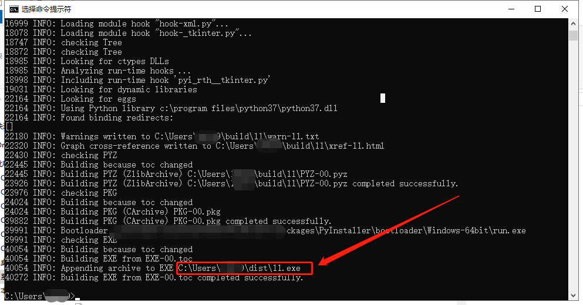

在学习python的路上如果觉得枯燥就可以想我一样做一些有趣的事情就不会无聊了
python是一门及其有趣的语言。
人们都喜欢记住一些重要的日子，比如说跟女朋友认识的日子，结婚纪念日、周年纪念日等等。
人们都喜欢下个软件来计算而我偏偏喜欢自己写个，
接下来我将介绍如何设计这个软件以及如何打包成exe文件给女朋友直接运行。
接下来我们会用到 datetime 模块和 time 模块用来获取时间以及计算时间
用 os 模块来控制电脑的关机 tkinter和 tkinter.messagebox 模块来做个弹窗警告
先加载模块
import datetime
import time#这两个是时间模块
import tkinter
import tkinter.messagebox #这个是消息框，对话框的关键
import os #这个是关机的关键模块 如果没有这些模块在cmd中pip install 即可获的
首先我们要定一个用户名和密码
如我用我女朋友名字做用户名，密码为我爱你但用户名和密码填错3次后就会关机，没错就是关机，就是这么绝，
不是关软件而是关机代码如下：
def passwora():
global a
a = 0
while True:
print("请输入你的名字后按回车")
name = input("你的名字：")
passwor = input("密码：")
if name == "肖天悦" and passwor=="我爱你":
App.trueafter()
print("zhe")
a = a + 1
print("密码错误你还有", 3 - a, "次机会")
App.falseafter()
用 os 模块做关机程序
def falseafter():
b=a
if (b > 2):
print("你的电脑将在10秒后关机")
for i in range(10, 0, -1):
print("还有", i, "秒")
time.sleep(1)
print("关机")
# os.system('shutdown -s -t 5')
return 0
接下来就是写软件的内容，这里自己写什么都可以我就写了一个我们的计时器
def trueafter():
while True:
d1 = datetime.datetime(2018,10,1,19,30,00)
# d1 = datetime.datetime(2019, 10, 13, 17, 26, 00)
d2 = datetime.datetime.now()
interval = d2 - d1
a=interval # 第一项是天数，相距1天
datetime.timedelta(1, 630)
b =interval.days # 具体天数
c=interval.seconds # 额外秒数
d =interval.total_seconds() # 相差总秒数
print("现在是",datetime.datetime.now())
print("在{}你遇见了我，是我们的开始".format(d1))
print("我们认识了",a)
print("有{}天了".format(b))
print("回想那时现在我们认识了有{}秒".format(d))
print("现在我只想跟你说，我对你的爱永远都不会变不管以后怎样")
time.sleep(2) # delays for 5 seconds
最后就是运行软件就行
App.passwora()
写完后就可以开始打包成软件了
这里我就介绍下如何用 pyInstaller模块 打包成软件
首先
在命令管理器即cmd中pip install pyInstaller安装pyInstaller模块安装完成之后在命令行中输入pyInstaller -F 文件路径安装
-F表示打包成单一个文件没有-F则会打包成一个文件夹和软件
pyInstaller -F D:\python\1.py打包完成后软件的目录在这里
把这个路径复制到文件夹目录既可以找到软件

讲到这里一个哄女朋友的软件就做完了
前提是你要有个女朋友
想要学python基础的朋友可以到我的python基础里面看下